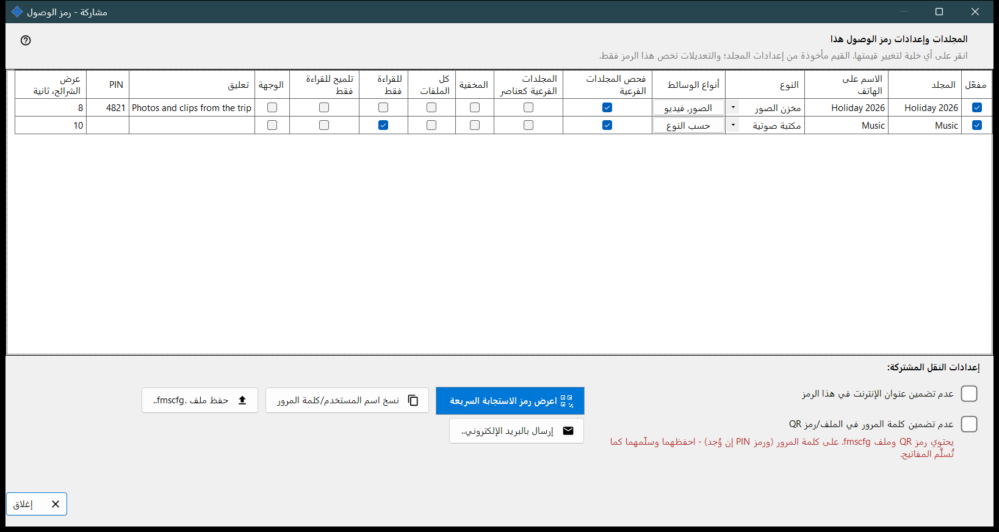
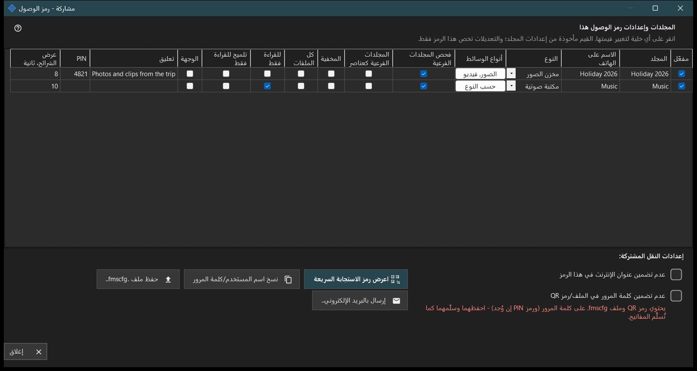

مشاركة - رمز الوصول
الغرض من هذه النافذة
ينشئ رمز الوصول للهاتف: رمز QR وملف .fmscfg يحملان العنوان واسم المستخدم والمجلدات المختارة. يُفتح من زر مشاركة في النافذة الرئيسية أثناء تشغيل المشاركة، ويتحقق من أن الهاتف يستطيع فعلاً الوصول إلى الكمبيوتر قبل تسليم الرمز.


بهذا الترتيب
- ضع علامة على المجلدات التي تُضمَّن في الرمز.
- عدّل أي خلية في الجدول يجب أن تختلف في هذا الرمز.
- حدّد عدم تضمين عنوان الإنترنت في هذا الرمز أو عدم تضمين كلمة المرور في الملف/رمز QR عند الحاجة.
- انتظر فحص الوصول.
- اعرض رمز QR أو احفظ ملف .fmscfg أو أرسله بالبريد أو انسخ اسم المستخدم وكلمة المرور.
عناصر النافذة
المجلدات وإعدادات رمز الوصول هذا
صف واحد لكل مجلد مشترك مع الأعمدة: مفعّل، المجلد، الاسم على الهاتف، النوع، أنواع الوسائط، فحص المجلدات الفرعية، المجلدات الفرعية كعناصر، المخفية، للقراءة فقط، تلميح للقراءة فقط، الوجهة، تعليق، عرض الشرائح، ثانية. انقر على خلية لتغييرها. تبدأ القيم من إعدادات كل مجلد، وتسري التعديلات على هذا الرمز فقط. للقراءة فقط قفل حقيقي على الخادم؛ أما تلميح للقراءة فقط فيُخفي أزرار التعديل في التطبيق فحسب. المجلد الوجهة قابل للكتابة دائماً، لذلك لا ينطبق عليه للقراءة فقط.
إعدادات النقل المشتركة
عدم تضمين عنوان الإنترنت في هذا الرمز يجعل الهاتف يتصل عبر الشبكة المحلية فقط؛ ولا يوقف الخادم، ويُغلق الوصول عبر الإنترنت للمشاركة كلها من إعدادات المدير. عدم تضمين كلمة المرور في الملف/رمز QR يزيل كلمة المرور من الرمز؛ فسلّمها بشكل منفصل. قبول الهاتف لرمز بلا كلمة مرور يتوقف على إصدار التطبيق.
فحص الوصول
أثناء جلب الحالة تذكر النافذة ذلك. إذا لم يكن الخادم يعمل، أو لم يُحدَّد أي مجلد، أو لم يوجد عنوان صالح، يذكر تلميح ما ينقص. وعندما لا ينتهي الفحص لا يُسلَّم الرمز ولا الملف: اضغط إعادة فحص الوصول.
عرض رمز QR
رمز QR وملف .fmscfg يفتحان الوصول إلى المجلدات ويحتويان على كلمة المرور وعلى PIN إن وُجد - احتفظ بهما وسلّمهما كما تفعل بالمفتاح. إذا كانت الإعدادات أكبر من أن يحملها رمز QR، فاحفظ الملف وأرسله بدلاً منه.
الملف والبريد واسم المستخدم
حفظ ملف .fmscfg.. يكتب الملف؛ وعلى نظام ملفات لا يستطيع تقييد الوصول، أو في مجلد يستطيع غيرك تغييره، ترفض النافذة لأن الملف يحوي مفتاح وصول. إرسال بالبريد الإلكتروني.. يرفق الملف مع ملاحظة باستيراده في تطبيق Android وحذفه بعد ذلك. نسخ اسم المستخدم/كلمة المرور يضع الاثنين في الحافظة.